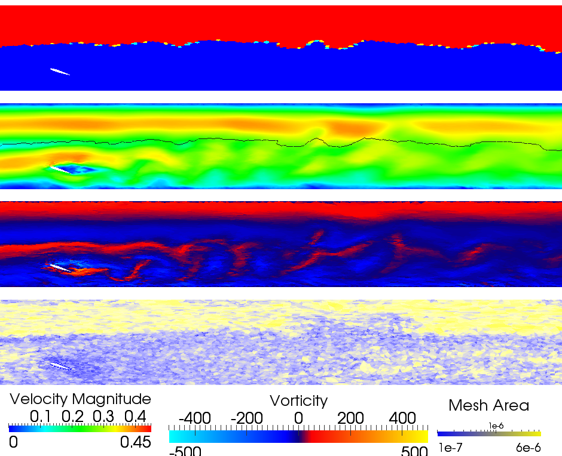
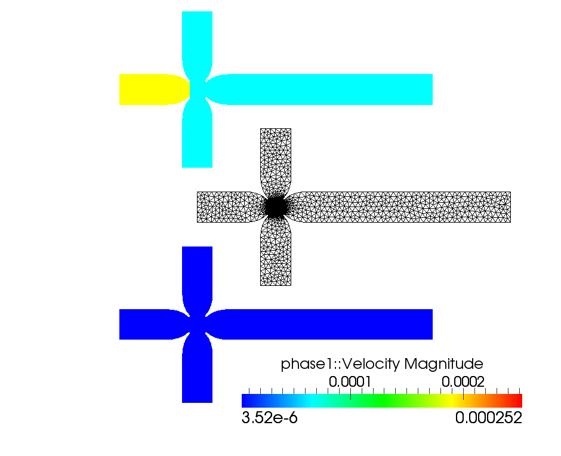

A reimplementation of the Fluidity Navier-Stokes solver for multiphase/multifluid problems.
Provides the dynamic core to the IC-FERST oil reservoir simulator and Darcy flow solver
Simulation tool of choice for the MEMPHIS EPSRC Programme Grant
Flow past a transverse cylinder
Focused mixing
